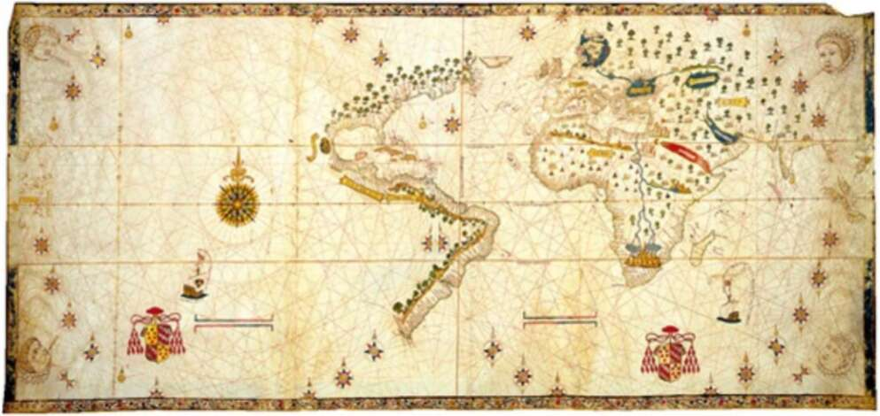

37. The Salviati World Map, 1525. While the 1459 world map is full of continents, islands and detailed explanations, the Salviati map is mostly empty. The eye wanders south along the American coastline, until it peters into emptiness. Anyone looking at the map and possessing even minimal curiosity is tempted to ask, ‘What’s beyond this point?’ The map gives no answers. It invites the observer to set sail and find out. These European explore-and-conquer expeditions are so familiar to us that we tend to overlook just how extraordinary they were. Nothing like them had ever happened before. Long-distance campaigns of conquest are not a natural undertaking. Throughout history most human societies were so busy with local conflicts and neighbourhood quarrels that they never considered exploring and conquering distant lands. Most great empires extended their control only over their immediate neighbourhood —- they reached far-flung lands simply because their neighbourhood kept expanding. Thus the Romans conquered Etruria in order to defend Rome (c.350-300 sc). They then conquered the Po Valley in order to defend Etruria (c.200 sc). They subsequently conquered Provence to defend the Po Valley (c.120 sc), Gaul to defend Provence (c.50 sc), and Britain in order to defend Gaul (c. av 50). It took them 400 years to get from Rome to London. In 350 sc, no Roman would have conceived of sailing directly to Britain and conquering it. Occasionally an ambitious ruler or adventurer would embark on a long-range campaign of conquest, but such campaigns usually followed well-beaten imperial or commercial paths. The campaigns of Alexander
